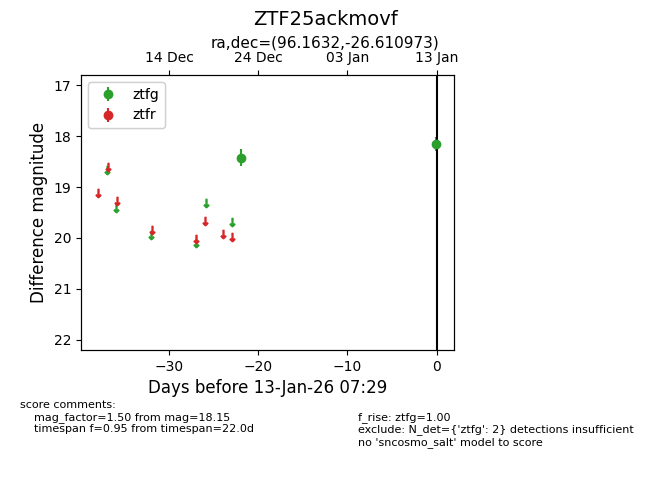
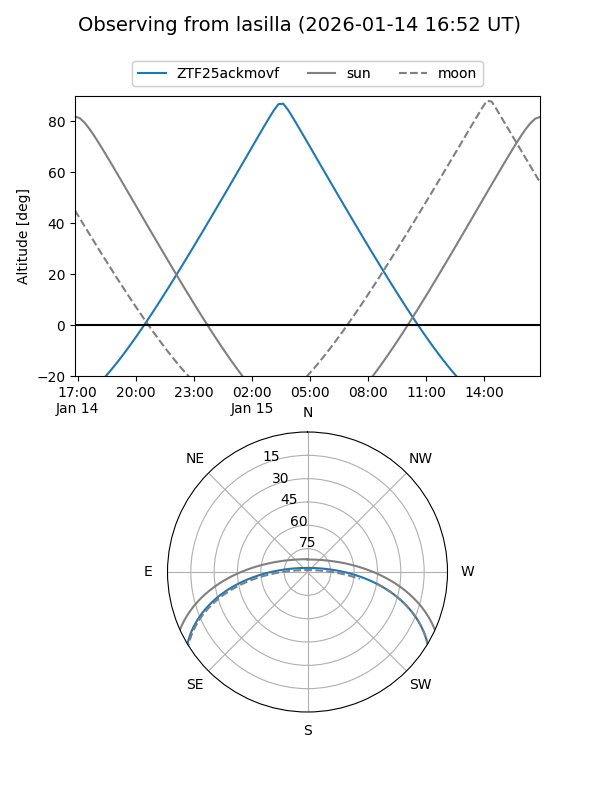
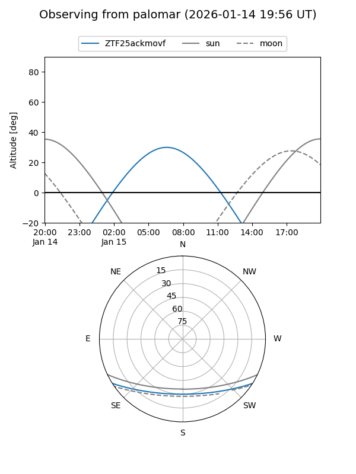

ZTF25ackmovf
Target ZTF25ackmovf at 2026-01-13 07:30
Aliases and brokers:
FINK: link
Lasair: link
ALeRCE: link
alt names
ZTF25ackmovf (ztf,fink_ztf)
Coordinates:
equatorial (ra, dec) = 96.1632,-26.61097
equatorial (HMS+DMS) = 06:24:39.16,-26:36:39.50
galactic (l, b) = (234.5064,-17.27955)
Flags:
Photometry:
last ztfg=18.15
2 ztfg detections
Lightcurve

Visibility


Additional plots